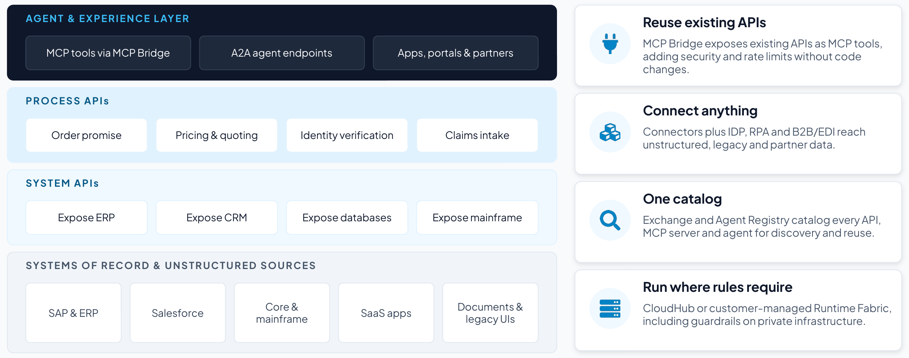

Section 3
Architecture: exposing enterprise capabilities securely
Architecture determines whether enterprise capabilities can be exposed securely and flexibly across channels, agents, platforms, clouds, the edge and on-premises environments, or whether they stay trapped in systems that are hard to access, govern and orchestrate. Many organizations are still modernizing toward a target state fixed at one point in time. An agentic enterprise needs a horizon architecture instead, meaning a two- to five-year vision tied to business priorities and maturity gaps.15 Research on horizon architecture has found that companies that have faced significant technology challenges tend to share a poorly defined, passively governed architecture function and insufficient executive and board oversight.15
Design around capabilities
Most enterprise architecture was designed around the places people interact, such as websites, mobile apps and contact centers. As agents increasingly become the primary consumers of enterprise services, architecture may need to shift to capability-centric design organized around functions such as search, pricing or identity verification.1 This extends the headless principle, in which capabilities are decoupled from any presentation so they can serve any interface and agents can act on them directly.
Salesforce, for example, now exposes its platform capabilities as APIs, MCP tools and CLI commands so agents can operate it without a browser.16 An agent as the consumer raises the design bar. Capabilities then need self-describing schemas and semantic metadata, secure and auditable access, and deterministic fallbacks so critical functions keep running in a degraded mode when a model, tool or network fails.
A digital-channel readiness framework17 offers a practical test with three dimensions:
- Embedded agentic capabilities.
- Operability for external agents, through structured content, machine-readable policies, standard agent protocols and APIs.
- Trustworthiness, spanning governance, compliance, observability, cost management, scalability and data provenance.
Without a standard way for agents to reach tools, every new pairing of agent and tool needs its own integration, so the number of integrations rises quadratically as agents spread. MCP makes integrations reusable, and the effort then grows only linearly.18 Exposing each capability once, as a governed API and MCP tool, is how that reuse becomes a design rule.
Choose the paradigm before the platform
Choose the architectural paradigm that best supports the business strategy first, and only then select platforms.1,19
| Pattern | How it works | Trade-off | How Agent Fabric supports it |
|---|---|---|---|
| Embedded | Agentic capabilities woven into each layer, often through SaaS applications |
| Registers and governs embedded agents (Agentforce, Copilot Studio, Bedrock, Gemini Enterprise Agent Platform) without re-platforming |
| Dedicated orchestration | A purpose-built agentic tier that centralizes runtime and governance |
| Agent Broker as the orchestration tier, with guided determinism for fixed hand-off rules |
| Hybrid / federated |
|
| Central registry, identity, cost and policy through AI Gateway while domains build on any platform |
The right pattern depends on strategy, maturity and constraints.1 In practice, large multi-vendor enterprises tend to converge on the hybrid/federated pattern, and Bain’s 2026 research on agentic architecture20 supports building it in a deliberate order, with centralized governance, reusable orchestration, unified agent registries and platform-level policy first, and federated discovery and cross-domain routing last, once those layers are mature.
Architect around outcomes and economics
Architecture should reflect the business outcomes AI is expected to produce as well as the systems through which work moves today. An outcome-first view helps leaders decide how much of a process needs deterministic, rules-based execution and where flexible, AI-driven reasoning adds value. Cost awareness belongs in the design as well as at runtime, so model choice, context size and routing thresholds should stay adjustable as the business case changes. A centralized product-management function with integrated workflows can steer these decisions against the business case.1
Balance composability with sovereignty and control
Leaders must decide how much of the stack should be modular and where non-negotiable requirements such as sovereignty, latency or control anchor the design. Industry interviews show both ends of that range. A tier-one US bank describes a full-stack model built on hyperscaler compute, managed services, models and developer platforms, while a defense technology executive expects sovereign AI to need a separate environment.1 Either can be right in its context. Control boundaries belong in the design from the start, and the architecture should allow for planned impermanence, with replaceable components, explicit re-evaluation and room to change as the environment evolves.1,19
How MuleSoft exposes enterprise applications
The first architectural requirement, exposing enterprise capabilities through secure, auditable and standardized service layers, is the problem MuleSoft was built to solve. Its API-led connectivity model organizes integration into reusable layers:
- System APIs expose data and functions in core systems (ERP, CRM, databases and mainframe) and shield consumers from change underneath.
- Process APIs compose those into business capabilities such as order promise, pricing, identity verification or claims intake.
- The agent and experience layer publishes the same capabilities to agents, applications, portals and partners.
Because each capability is built once and governed at the gateway, the same security, rate limits and audit apply whether a person, an application or an agent calls it. These capabilities make that foundation agent-ready:
- MCP Bridge exposes existing APIs as MCP tools and extends security and rate-limiting without code changes.21
- Connectors, Intelligent Document Processing, robotic process automation and B2B/EDI reach unstructured, legacy and partner data that has no clean API.21
- Agent Registry, built on MuleSoft Exchange, catalogs APIs, MCP servers and agents for discovery and reuse, including curated public MCP servers and Informatica-hosted data-quality and governance servers.21
- CloudHub or customer-managed Runtime Fabric lets organizations run integrations and guardrails in MuleSoft’s managed cloud or, where sovereignty or privacy requires it, on their own infrastructure.21
Half of organizations already use APIs to connect and govern AI.2
